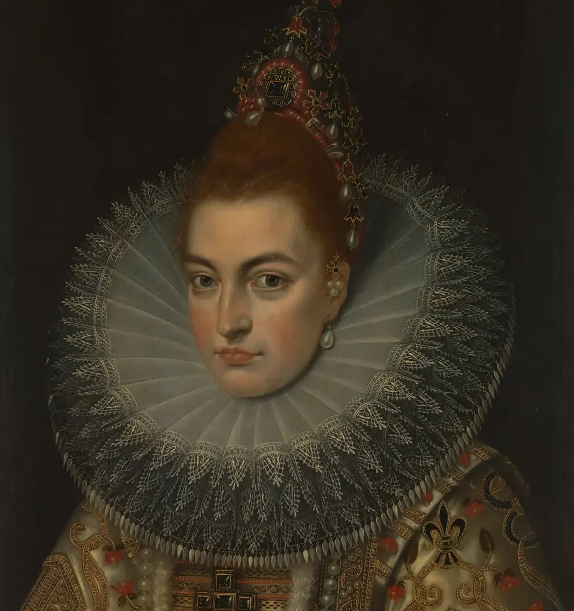

Unlock the Beauty of the

Renaissance
The Renaissance was a period of great cultural, intellectual, and artistic change in Europe from the 14th to the 17th centuries.
We strive to create an environment where the masterpieces of the Renaissance can be appreciated and admired by all.
Online guide
